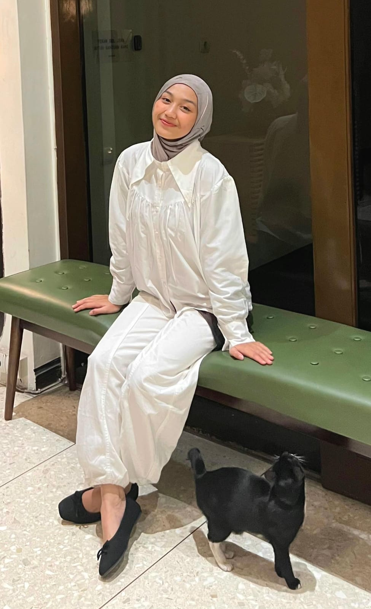
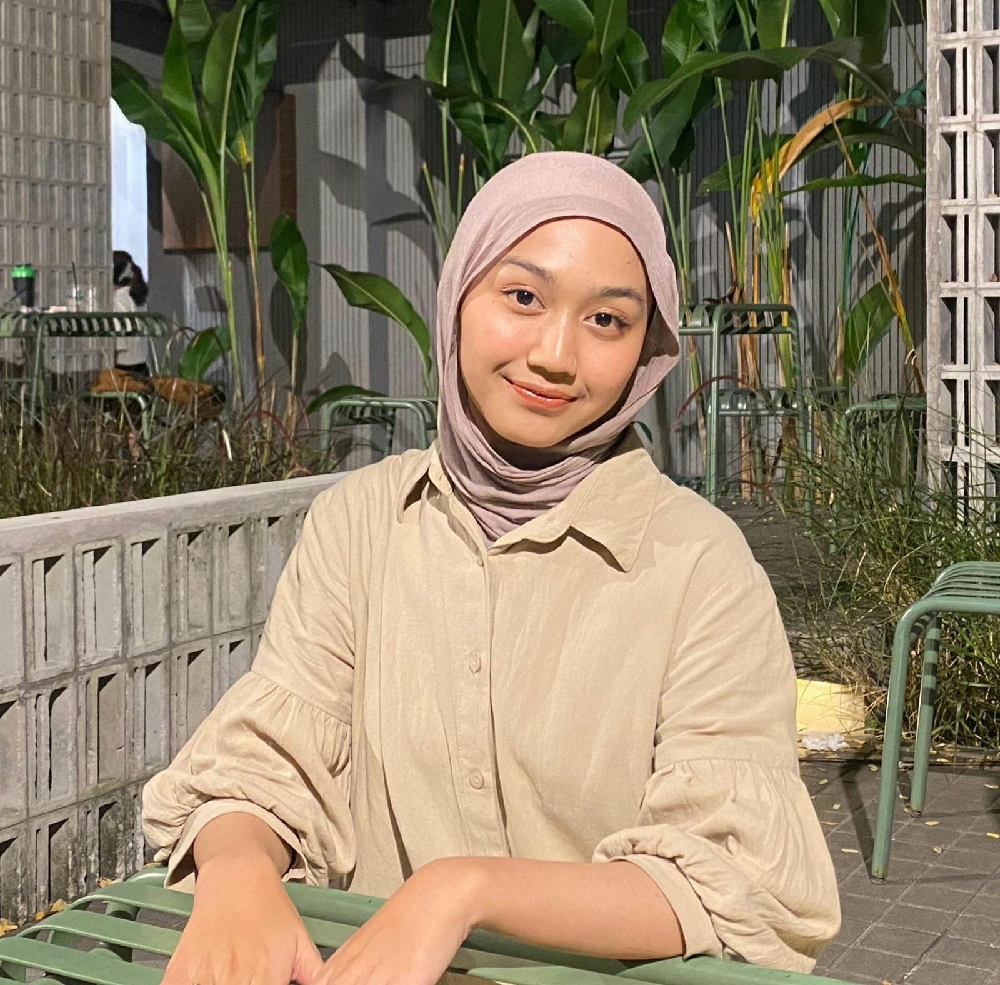
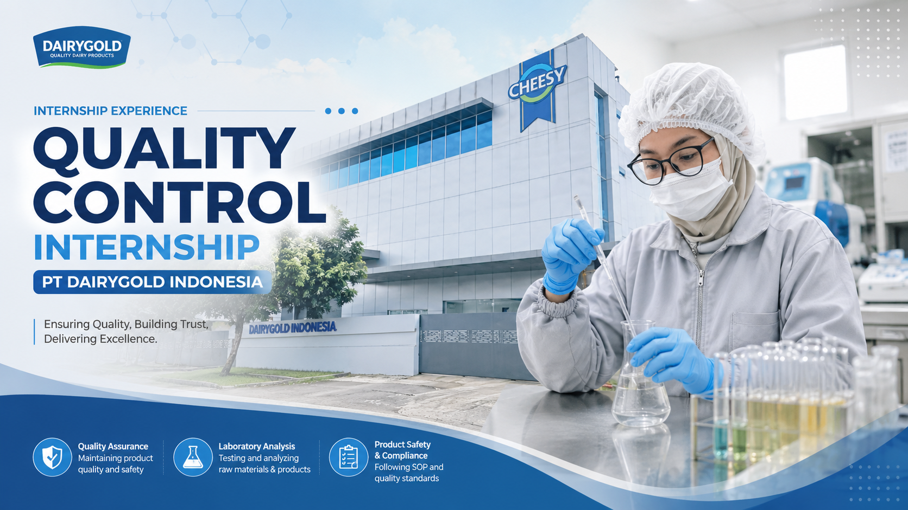
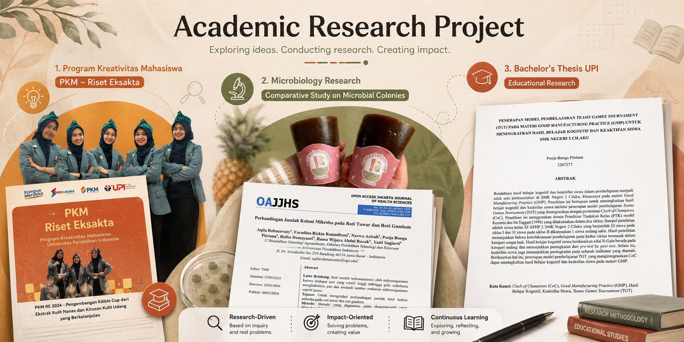
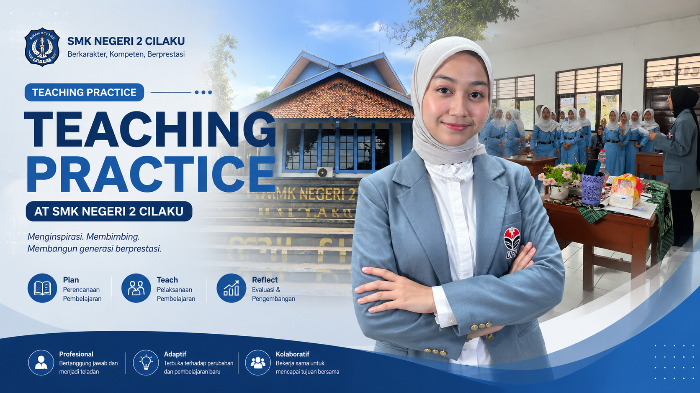

Quality Control • R&D • Training Development
Fresh Graduate in
Agroindustrial Technology
Education



Completed a Quality Control internship at PT Dairygold Indonesia, supporting quality control activities across the Physicochemical Laboratory, Microbiology Laboratory, and production line.

Conducted academic research projects including a Ministry of Education, Culture, Research, and Technology-funded Student Creativity Program project on eco-friendly edible cups, a microbiological analysis of bread using the Total Plate Count (TPC) method, and a bachelor's thesis on the development of an interactive learning model for Good Manufacturing Practice (GMP).

Completed a teaching practicum at SMK Negeri 2 Cilaku by designing and delivering Food Safety learning materials covering GMP, SSOP, and HACCP. Developed instructional materials, learning media, and assessment instruments while facilitating classroom learning and evaluating student learning outcomes.
Completed a teaching practicum at SMK Negeri 2 Cilaku by designing and delivering Food Safety learning materials covering GMP, SSOP, and HACCP. Developed instructional materials, learning media, and assessment instruments while facilitating classroom learning and evaluating student learning outcomes.